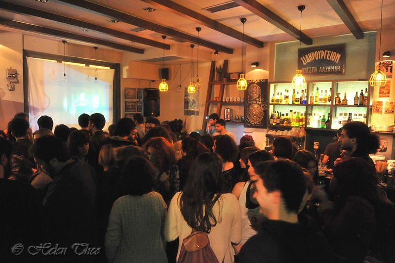

Sideradiko Xanthi
06 April 2013
The band starts to warm up again and heads for the first time to the eastern Greece's capital, Xanthi. The city and their people felt so welcome and made our experience a really cosy one! Christos, Rita and of course, Sideradiko Bar thanks for everything! TM architects (ΤΜ αρχιτέκτονες) designed the poster as well as brand new visuals for the entire live set, which will accompany hopefully all of "Your Hand in Mine's" upcoming 2013 concerts...Here are some snapshots by Helen Theo:
